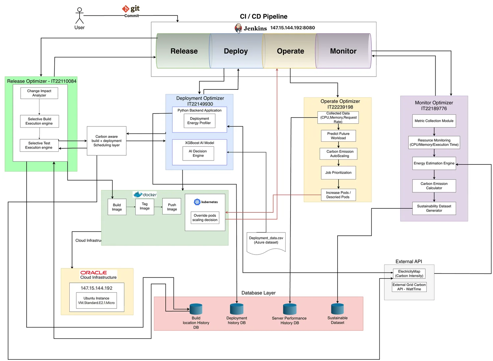
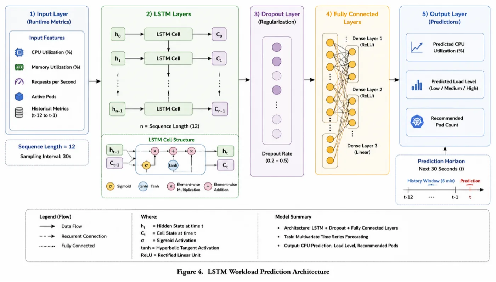

Context
Research background
Modern software delivery depends on frequent automated builds, tests, deployments and runtime scaling. Those activities consume compute resources, yet conventional DevOps decisions usually optimize for speed and reliability before environmental impact.
Green DevOps expands the decision space. The project studies when work is necessary, when it should execute, how infrastructure should scale, and how sustainability regressions can be detected after execution.
Primary final source: revised journal manuscript, "An Integrated Green DevOps Framework for Sustainable Software Delivery and Operations."
Required domain content
Literature survey
Sustainable software engineering and Green DevOps
The revised manuscript grounds the project in sustainable software engineering, Green DevOps and SusDevOps. These works frame sustainability as a software quality concern that extends across design, delivery, operation and governance.
Energy measurement and carbon accounting
Direct hardware power measurement is difficult in cloud and virtualized environments. Resource-based estimation, Software Carbon Intensity, Power Usage Effectiveness and cloud carbon accounting provide the measurement basis used by the project.
CI/CD efficiency and selective execution
Regression test selection, test minimization, build dependency graphs and CI caching reduce redundant work. The project extends this direction by connecting selective execution to carbon-aware timing.
Carbon-aware computing and sustainable deployment
Carbon-aware systems use time-varying grid intensity to shift delay-tolerant workloads. Deployment research adds strategy and infrastructure considerations, which matter when release reliability and resource overlap must be balanced.
AI-driven resource management and sustainability intelligence
Predictive models can anticipate workload demand before reactive thresholds are crossed. Sustainability monitoring then adds historical baselines and anomaly detection through statistical methods and Isolation Forest-based models.
Problem statement
Research problem
Release
Full builds and tests run even when a change affects only a small module set. Build timing is also carbon-blind.
Deployment
Production promotion can occur immediately after build completion, regardless of grid carbon intensity or deployment strategy footprint.
Operation
Reactive Kubernetes scaling responds after utilization changes and usually ignores workload urgency and carbon consequences.
Monitoring
Observability platforms measure performance and utilization, but rarely maintain sustainability baselines or detect environmental regressions.
Research gap
The missing lifecycle integration
Selective testing, carbon-aware scheduling, predictive resource management and sustainability monitoring have each been investigated. The final journal identifies the gap as the lack of a coherent framework that applies carbon-aware decision support consistently across Release, Deploy, Operate and Monitor stages.
The project contribution is the integrated decision architecture and the feedback loop. Monitoring outputs influence future release timing, deployment scheduling and operational scaling decisions.
Final research questions
Research questions
- RQ1 (Release): To what extent can git-diff-based, module-level change-impact analysis, combined with a learned carbon-intensity classifier, reduce both unnecessary build/test execution and the carbon cost of necessary execution in CI/CD pipelines?
- RQ2 (Deploy): How can real-time grid carbon-intensity signals and predictive analytics be incorporated into deployment scheduling to identify low-carbon deployment windows without degrading delivery performance?
- RQ3 (Operate): How accurately can an LSTM-based model predict Kubernetes workload demand, and how can carbon-emission estimation and workload prioritization be integrated into scaling decisions to reduce environmental impact while preserving SLA compliance?
- RQ4 (Monitor): How can sustainability monitoring be extended from measurement alone to historical baseline modelling and anomaly detection, enabling automatic identification of sustainability regressions across the Release, Deploy, and Operate stages?
Research direction
Research objectives and contribution
The overall objective is to develop an integrated Green DevOps framework that reduces unnecessary computation and supports carbon-aware decisions while preserving delivery velocity, performance, reliability and SLA compliance.
- Develop and benchmark module-level change-impact analysis and a carbon-intensity classifier for Release.
- Measure deployment-stage carbon impact and identify lower-carbon deployment windows.
- Develop LSTM workload forecasting, carbon estimation and job prioritization for sustainable Kubernetes scaling.
- Construct sustainability baselines and anomaly detection across Build, Test and Deploy activity.
- Evaluate the integrated framework across the lifecycle and distinguish measured evidence from proposed capabilities.
The novelty is lifecycle integration: each stage contributes a sustainability decision, and monitoring creates feedback for future decisions.
Proposed solution
Methodology
The research combines deterministic CI analysis, machine learning, software-based carbon estimation, Kubernetes decision support and sustainability monitoring.
| Stage | Data inputs | Methods | Decision output |
|---|---|---|---|
| Release | Git diff, Maven modules, carbon-intensity history | Module-level change impact, selective execution, LightGBM classifier, bounded scheduling | Build/test scope and eligible execution window |
| Deployment | Deployment telemetry, grid intensity, system load, history | Energy/carbon estimation, ReAct decision approach, strategy comparison | Deployment window and Recreate/Rolling/Canary strategy |
| Operation | CPU, memory, requests, pods, workload history, urgency | LSTM forecasting, carbon estimation, priority engine, runtime decision engine | Scale Up, Scale Down, Maintain or Delay Jobs |
| Monitoring | Historical stage records, energy, carbon and duration features | Z-score analysis, Isolation Forest-based detection, sustainability baselines | Anomaly flags, sustainability insight and SHS feedback |
Energy and carbon values are estimated from telemetry and grid intensity. The revised journal identifies direct power measurement and production-scale validation as future needs.
System architecture
Integrated architecture
Final High-Level Architecture Diagram

Change scope and module dependencies.
Selective build/test and carbon-aware scheduling.
Strategy and timing decision using telemetry and carbon signals.
Predictive scaling and priority-based runtime actions.
Baselines, anomalies and sustainability records.
Insights return to earlier decisions.
How the whole system works
The framework begins with source-code changes. Release identifies the affected Maven modules and avoids unnecessary build/test work. Deployment receives the successful artifact and combines telemetry with carbon-intensity signals to choose a suitable deployment window and strategy. Operation predicts runtime demand and applies carbon-aware priority logic to scaling and delay decisions. Monitoring stores stage-level sustainability records, builds baselines, detects anomalies and sends the resulting intelligence back to earlier lifecycle decisions.

The manuscript describes Oracle VM, Ubuntu, K3s Kubernetes, Jenkins, Python and Docker as implementation infrastructure. Electricity Maps and WattTime are named carbon-signal sources, with fallback heuristics when external services are unavailable.
Component detail
Research components
Release Management
Problem: redundant CI/CD work and carbon-blind execution. Approach: git-diff to Maven module mapping, selective build/test execution, LightGBM carbon classification and bounded lower-carbon scheduling. Evaluation: five-fold time-series validation and ten paired Jenkins benchmark runs. Findings: macro F1 0.9787, 47.7% mean wall-clock reduction and 90.4% test skip rate. Integration: passes optimized artifacts and sustainability metadata to Deployment.
Deployment Stage
Problem: deployment timing and strategy choices may ignore carbon intensity. Approach: telemetry-based energy estimation, real-time grid carbon intensity, AI-assisted deployment scheduling and ReAct-based strategy reasoning across Recreate, Rolling and Canary. Evaluation: included in integrated implementation and monitoring records, with no standalone numerical deployment benchmark in the final Results section. Integration: sends deployment profiles and carbon estimates to Operation.
Operations Stage
Problem: reactive scaling lacks future-demand and sustainability context. Approach: LSTM workload prediction, carbon estimation, Job Priority Engine and Runtime Decision Engine. Evaluation: Bitbrains fastStorage unseen test data. Findings: R2 0.946 and MAPE 3.28%, with generated recommendations for scale, maintain or delay actions. Integration: outputs runtime decisions and classifications to Monitoring.
Monitoring Stage
Problem: sustainability metrics need historical context and regression detection. Approach: central sustainability records, stage-specific baselines, Z-score analysis, Isolation Forest-based detection and Sustainability Health Score. Evaluation: 21 Jenkins runs and 63 stage records. Findings: 8 statistical flags, 6 Isolation Forest flags, 0.001163 kWh estimated energy and 0.000502 kgCO2e estimated emissions over the monitored sample. Integration: feeds insights back to Release, Deployment and Operation.
Required domain content
Technologies used
DevOps and CI/CD
Jenkins, GitHub/Git, Maven, GitHub Actions, Jenkins Pipeline, Groovy, Surefire reports.
Cloud and infrastructure
Oracle VM, Ubuntu, Docker, K3s/Kubernetes, Node Affinity, Taints and Tolerations.
AI and machine learning
Python, LightGBM, LSTM, Prophet, SHAP, ReAct-style reasoning, Isolation Forest-based anomaly detection.
Monitoring and data
Prometheus, Grafana, SQLite/MongoDB Atlas from stage materials, historical stage records and Bitbrains fastStorage data.
Carbon intelligence
Electricity Maps, WattTime, Software Carbon Intensity concepts, PUE and resource-utilization-based energy estimation.
Research tools
Jenkins execution logs, deployment telemetry, workload traces, statistical baselines and academic evaluation artifacts.
Evidence
Evaluation
- Release: LightGBM evaluated with five-fold time-series cross-validation; selective execution tested through ten paired Jenkins optimized/unoptimized runs on identical commits.
- Operation: LSTM evaluated on unseen Bitbrains fastStorage workload traces.
- Monitoring: sustainability baselines and anomaly detection evaluated using 21 Jenkins executions and 63 Build/Test/Deploy stage records.
- Deployment: final manuscript describes implementation and integration, but does not report a separate numerical deployment experiment.
Final findings
Research findings
Release classifier macro F1
LightGBM carbon-intensity classification.
Mean total pipeline reduction
Paired Jenkins benchmark runs.
Selective test skip rate
13 of 136 possible tests executed.
LSTM R2
Workload prediction on unseen test data.
Anomaly flags
8 statistical flags and 6 Isolation Forest flags. These are not validated accuracy scores.
Prophet MAPE limitation
The release forecasting layer needs refinement.
Research boundaries
Limitations
- Energy consumption uses resource-utilization-based estimates rather than direct hardware power measurement.
- Carbon calculations depend on external carbon-intensity data availability and accuracy.
- Predictive and anomaly models may require retraining as workload behavior changes.
- External validity is limited by the experimental environment and small monitoring sample.
- The journal reports no end-to-end measured carbon-saving percentage or standalone deployment benchmark.
Future work
- Improve carbon forecasting.
- Explore reinforcement-learning-based optimization.
- Add embodied carbon and infrastructure lifecycle indicators.
- Evaluate across diverse cloud environments and production-scale systems.
Selected references from the revised manuscript
References
- G. Rothermel and M. J. Harrold, "Analyzing regression test selection techniques," IEEE Transactions on Software Engineering, 1996.
- S. Yoo and M. Harman, "Regression testing minimization, selection and prioritization: a survey," Software Testing, Verification and Reliability, 2012.
- Apache Software Foundation, "Maven: Guide to Working with Multiple Modules."
- A. Radovanovic et al., "Carbon-aware computing for datacenters," IEEE Transactions on Power Systems, 2023.
- P. Wiesner et al., "Let's wait awhile: How temporal workload shifting can reduce carbon emissions in the cloud," Middleware, 2021.
- Green Software Foundation, "Software Carbon Intensity (SCI) Specification."
- G. Ke et al., "LightGBM: A highly efficient gradient boosting decision tree," NeurIPS, 2017.
- S. J. Taylor and B. Letham, "Forecasting at scale," The American Statistician, 2018.
- J. Yao et al., "ReAct: Synergizing reasoning and acting in language models," 2022.
- F. T. Liu, K. M. Ting and Z. H. Zhou, "Isolation Forest," ICDM, 2008.
- S. Hariri, M. Carrasco Kind and R. J. Brunner, "Extended Isolation Forest," IEEE Transactions on Knowledge and Data Engineering, 2021.
The source manuscript contains a longer reference list with duplicate and incomplete entries. This website uses selected source references without inventing missing bibliographic details.